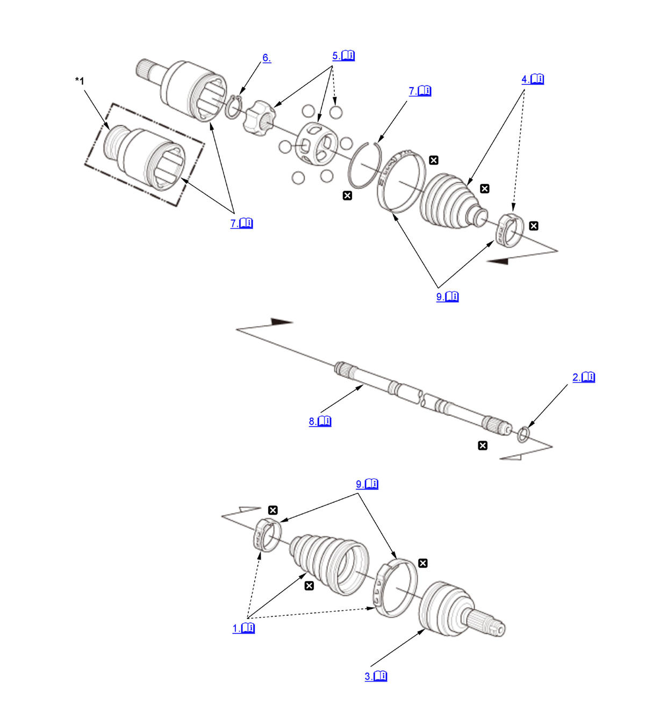

Front Driveshaft Disassembly and Reassembly (K20C1 (M/T)) (2017 2018 2019 2020 2021): Reassembly: Procedure
Numbered call-outs in figure pertain to list numbers in following procedure.

Courtesy of HONDA, U.S.A., INC. |
Detailed information, notes, and precautions |
 |
Replace |
| *1 | Right driveshaft |
- Outboard Boot - Install
NOTE:
- Wrap the splines on the driveshaft (A) with vinyl tape (B) to prevent damaging the outboard boot (C).
- Install the ear clamp bands (D) with the boot to prevent damaging the bands.
- Stop Ring - Install
1. Make sure to check the size of a new stop ring. NOTICE: To avoid driveshaft and vehicle damage, make sure you install a new stop ring.
Stop ring specifications Overall diameter (A): 32 mm (1.26 in) Wire diameter (B): 2 mm (0.08 in) - Outboard Joint - Install
1. Fill grease through the driveshaft hole in the outboard joint before installing the driveshaft. Inject enough grease so that it seeps out from the gap around the bearing when the driveshaft is inserted.
NOTE: If you are installing a new outboard joint, the grease is already installed.2. Insert the driveshaft (A) into the outboard joint (B) until the stop ring (C) is close to the joint. 3. To completely seat the outboard joint, pick up the driveshaft and the joint, and tap or hit the assembly onto a hard surface from a height of about 10 cm (3.9 in).
NOTE: Do not use a hammer, as excessive force may damage the driveshaft. Be careful not to damage the threaded section (A) of the outboard joint.4. Check the alignment of the paint mark (A) you made with the outboard joint end (B). NOTICE: To avoid driveshaft and vehicle damage, the shaft must be all the way into the outboard joint to ensure the stop ring is properly seated.
5. Pack the outboard joint (A) with the remaining joint grease included in the outboard boot set. Total grease quantity
Outboard joint:160-180 g (5.64-6.35 oz) 6. Fit the boot ends (A) onto the driveshaft (B) and the outboard joint (C). 7. Bleed any excess air from the boot by inserting a flat-tipped screwdriver between the boot and the joint.
- Inboard Boot - Install
NOTE:
- Wrap the splines on the driveshaft (A) with vinyl tape (B) to prevent damaging the inboard boot (C).
- Install the ear clamp band (D) with the boot to prevent damaging the band.
- Bearing Retainer and Bearing Race - Install
1. Install the bearing retainer (A) and the bearing race (B) onto the driveshaft (C) by aligning the marks (D) you made on the bearing retainer, the bearing race, and the driveshaft. 2. Install the steel balls (E).
- Snap Ring - Install
- Inboard Joint - Install
1. Pack the inboard joint with the joint grease included in the new inboard boot set. Grease quantity Inboard joint: 140-160 g (4.94-5.64 oz) 2. Install the inboard joint (A) onto the driveshaft by aligning the marks (B) you made on the inboard joint and the bearing retainer. 3. Install a circlip (C) into the inboard joint groove.
4. Fit the boot ends (A) onto the driveshaft (B) and the inboard joint (C). 5. Bleed excess air from the boots by inserting a flat-tipped screwdriver between the boot and the joint.
- Driveshaft Length - Adjust
1. Inspect the length (A) of the driveshafts in the figure as shown. 2. Adjust the boots to halfway between full compression and full extension.
NOTE: Install the joints at exactly the same length.
- Boot Band - Install
Ear clamp type
1. Close the ear portion (A) of the band using a commercially available boot band clamp tool (Kent-Moore J-35910 or equivalent) (B).
2. Check the clearance (C) between the closed ear portion of the band. If the clearance is not within the standard, close the ear portion of the band tighter.
NOTE: Replace the ear clamp band with a new one when the ear portion exceeds the prescribed clearance.
Low profile type
1. Install the low profile band (A) onto the boot (B), than hook the tab (C) of the band.
2. Close the hook portion of the band using commercially available CV Boot Clamp Pliers (30500) (D), then hook the tabs of the band.